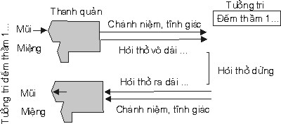
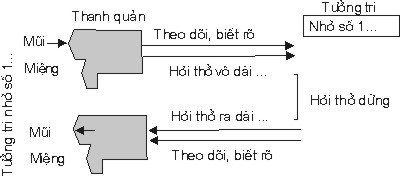
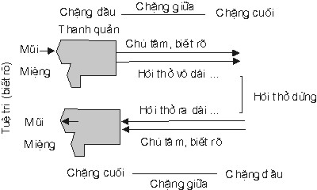
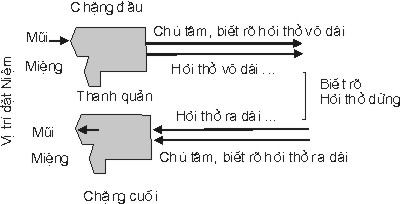
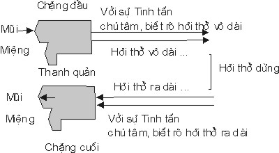
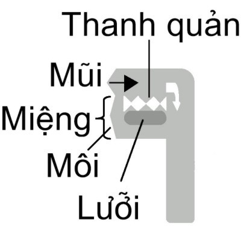

|
BuddhaSasana Home Page |
Vietnamese, with Unicode Times font |
Phật lịch 2544, Tl 2000
|
[01] Thật là huyền diệu và lý thú đối với phương pháp tu tập hơi thở. Những ai đã từng tu tập phương pháp nầy, tu tập đúng cách và đã thành công, thì sẽ thấy những lời nói trên không phải là sáo ngữ mà thật sự là như vậy. Phương pháp tu tập hơi thở đức Phật đã nói đến rất nhiều trong kinh Tạng. Các sách Thiền của nhiều hệ phái Phật giáo bàn đến lại còn nhiều hơn, chưa kể đến Yoga của Ấn Ðộ, khí công của Trung Quốc, dưỡng sinh của Việt Nam đương thời ..v..v... Phương pháp niệm hơi thở, chúng ta có thể học với đức Phật trong kinh Tạng Pàli, học với các Tổ Sư nhiều trường phái, nhưng cuối cùng phải học với chính mình (kinh nghiệm bản thân). Nếu được sắp xếp theo một công thức tuần tự, tiệm tiến nhưng vững chắc, bất cứ hành giả nào dù căn cơ đốn tiệm gì cũng được kết quả, chỉ cần có ý chí, kiên nhẫn và tinh tấn tu tập mỗi ngày đều đều. Với phương pháp nầy ai nóng vội muốn được liền (đốn giáo), tự động lên lớp (phần một chưa được lại qua phần hai) thì không được thành công (Dục tốc bất đạt!). Trước hết hành giả phải tìm được một chỗ thanh vắng, như đức Phật dã dạy trong kinh: "Ði đến khu rừng, đi đến gốc cây, đi đến ngôi nhà trống ...", rồi hành giả ngồi theo cách nào thích hợp với bản thân, như ngồi kiết già chẳng hạn, giữ thân được thăng bằng, đầu, cổ, lưng phải thẳng. Ngồi thế nào khi thở vô thở ra, hơi thở thông suốt, dễ thở là đúng, vì nếu ngồi lưng cong thì bụng bị ép, ngồi nghiêng ngữa thì bụng bị căng, ngực bị tức, mau bị mệt, bị mõi ..v..v.. Sau khi ngồi xong hành giả bắt đầu tập: -ooOoo- [02]
Chú tâm theo dõi hơi
thở vô xong, đếm 1 Ðếm lên đến 5 Trở lại từ 1 lên đến
6 Tiếp theo trở xuống Từ 1 lên đến 10 Cứ như vậy, tập cho thuần thục, là không bị quên, không bị lộn, không bị gián đoạn vì phóng tâm. Bí quyết cu ûa cách đếm hơi thở là biết lấy hơi thở làm cảnh (đề mục) [*] để trụ tâm chứ không phải lấy thân căn làm cảnh (chỗ gió xúc chạm tức mũi, thanh quản v.v...), chỉ biết gần như độ chừng hơi thở vào, ra, dừng lại vậy thôi, bởi tâm không có trú bên gió (hơi thở) mà chỉ trú bên thân căn như mũi, miệng, thanh quản. Nếu không xác định được căn, cảnh, thức thì trọn kiếp hành giả không có phát triển được định, tuệ, niệm gì cả! Và chỉ cần niệm được một hơi thở thật chính xác, thật rõ ràng, lấy đó làm kinh nghiệm cho những hơi thở khác về sau cũng được chính xác, rõ ràng, chớ đừng ham "Ngồi cho cố" một hai giờ mà niệm sống sít thì chỉ "Có tiếng mà không có miếng".
Ðến lúc nào hành giả thấy đếm từng hơi thở vô, từng hơi thở ra có vẻ phiền toái, bận rộn, muốn đơn giản một chút cho thoải mái, dễ chịu. Hành giả đổi cách đếm như sau: Chú tâm theo dõi hơi thở vô, ra rồi mới đếm [Ðếm trong thanh quản, chứ không cần bằng môi.] - Hít vô, thở ra xong, đếm
1 Ðếm lên đến 5 Trở lại từ 1 lên đến
6 Tiếp theo trở xuống Từ 1 lên đến 10 Hành giả nên biết: - Hít vô xong đếm 1,
kể là một khoảng cách. Ðếm là cách làm dấu cho nhớ, cũng như người ta vát lúa từ kho xuống ghe, hay từ ghe lên kho, khi nhấc bao lúa lên vai người ta lấy thẻ, lên đến kho người ta bỏ thẻ ... gọi là có Chánh niệm do đếm. Khởi đầu hành giả đếm thầm, có động đậy thanh quản, khi thuần thục rồi hành giả nên bỏ cách đếm thầm (Có động đậy thanh quản), tập đếm bằng cách nhớ con số như: - Chú tâm theo dõi hơi
thở vô xong đếm 1... Nhớ ở đây đương nhiên là tưởng tri, vì con số là "khái niệm" làm dấu cho nhớ, chữ "nhớ" ở đây đúng nghĩa là "nhớ" như nhớ nhà, nhớ cảnh ... Sở dĩ phải nói rõ như vậy để phân biệt rõ ràng đối với cách đếm thầm nói trên, tức là cách nhớ nầy, hoàn toàn không có động đậy thanh quản (Glotte, Larynx). Nếu hành giả chưa tập, hay tập cách đếm thầm chưa được thuần thục, thì định lực còn yếu chuyển qua cách nầy sớm quá sẽ bị quên, mà quên sẽ bị phóng tâm, nên phải theo cách đếm thầm trước, được rồi mới qua cách nhớ con số, cứ như vậy mà tập cho thuần thục, không bị quên, không bị lộn, không bị gián đoạn vì phóng tâm. BIỂU ÐỒ SỐ TỨC I . (Ðếm thầm)  Ghi chú: Màu dợt tượng trưng niệm, màu đậm tượng trưng hơi thở. II. (Nhớ số)  Ghi chú: Khi chú tâm, ghi nhận thì Chánh niệm đặt ở mũi, hay ở miệng, hay ở thanh quản ... Chỗ nào chỉ một chỗ thôi, nếu thở bằng mũi thì đặt niệm ở mũi, nếu thở bằng miệng thì đặt niệm ở miệng, nhưng mũi hay miệng đều ngang qua thanh quản. Ðến khi nào hành giả thấy cách đếm hơi thở gọi là số tức quan, có vẻ phiền toái, bận rộn vì con số đếm, muốn đơn giản hơn một chút cho thoải mái, dễ chịu. Hành giả bỏ cách đếm, đổi qua cách tùy tức thuần túy (Chỉ chú tâm theo dõi hơi thở). 2.I. TÙY QUÁN HƠI THỞ Hành giả tác ý định niệm nơi mũi [*], ghi nhận và biết rõ hơi thở vào, hơi thở ra:
Hướng tâm an trú niệm nơi mũi: 1. Chú tâm ghi nhận và biết rõ hơi thở vô dài từ chặng đầu, chặng giữa và chặng cuối. 2. Chú tâm ghi nhận và biết rõ hơi thở ra dài từ chặng đầu, chặng giữa vàchặng cuối. 3. Chú tâm chi nhận và biết rõ hơi thở vô và hơi thở ra dài từ chặngđầu, chặng giữa và chặng cuối.
Câu: "Nó chánh niệm thở vô, nó chánh niệm thở ra". Nên hiểu: Nó là tâm Thiện dục giới, mới có sở hữu Niệm đồng sanh, để ghi nhận hay theo dõi hơi thở vô, hơi thở ra. Câu: "Thở vô dài, nó biết rõ hơi thở vô dài". Nên hiểu: Nó là tâm Thiện dục giới hợp trí, mới có sở hữu Tuệ quyền đồng sanh, để biết rõ (Tuệ tri, Pajànàti) hơi thở vô dài. Và "Thở vô dài, nó biết rõ hơi thở vô dài, không phải thở vô xong rồi mới biết hơi thở vô dài". Vì đoạn nầy kinh văn dùng thì hiện tại chứ không phải thì quá khứ (cái đã qua) và biết bằng Tuệ chứ không phải biết bằng Tưởng (biết chuyện đã rồi). Như đã nói là biết rõ từ chặng đầu, chặng giữa và chặng cuối của hơi thở, tức là hơi thở có bao nhiêu thì biết rõ bấy nhiêu (không nhiều hơn cũng không ít hơn), có nghĩa là Tuệ tri không bị gián đoạn, như ống tre dài 5 tấc thì cái thước kéo ra đo đến chỗ 5 tấc là hết ống tre. Tức là chỉ có gió là hơi thở, chứ không có người thở, chỉ có Niệm ghi nhận hơi thở, chứ không có người ghi nhận hơi thở, chỉ có Tuệ biết rõ hơi thở, chứ không có người biết rõ hơi thở, và chỉ có tâm đồng sanh với Niệm, Tuệ ... chứ không có người đồng sanh với Niệm, Tuệ. Ở vào khoảng dừng của hơi thở ra và hơi thở vô, hành giả tập trung tư tưởng tăng cường chánh niệm bằng cách nghĩ rằng: "Hãy tinh tấn" rồi:
Khi tập như vậy một thời gian (mau hoặc lâu tùy theo căn cơ của từng hành giả), thuần thục rồi, tâm nhu nhuyến, dễ sử dụng, sự hân hoan sanh khởi, bấy giờ hành giả hãy tác ý ở vào khoảng dừng của hơi thở ra và hơi thở vô, rồi hành giả tập trung tư tưởng tăng cường chánh niệm bằng cách nghĩ rằng : "Với sự hân hoan nầy sẽ làm cho hơi thở vi tế hơn nữa" rồi:
BIỂU ÐỒ TÙY TỨC I . (Biết rõ)  Ghi chú: Từ phần sau của chặng đầu hơi thở vô cho đến phần trước của chặng cuối hơi thở vô là chặng giữa của hơi thở vô II. (Biết rõ liên tục)  Ghi chú: Hơi thở có gián đoạn, nhưng Tuệ tri không được gián đoạn: Vô biết vô, dừng biết dừng, ra biết ra, dứt biết dứt. Sau chặng đầu hơi vô cho đến trước chặng cuối hơi ra là chặng giữa của cách biết rõ liên tục. III. (Với sự tinh tấn)  Ghi chú: Dấu chấm lững (...) sau chữ dài là ngắn, cách niệm hơi ngắn cũng giống như niệm hơi dài. IV. (Với sự hân hoan) biết rõ liên tục Ghi chú: Hơi thở vô và hơi thở ra vẫn có chặng đầu và chặng cuối, nhưng chánh niệm thì liên tục. Từ lúc bắt đầu thở vô cho đến chấm dứt hơi thở ra, chỉ tính là một khoảng cách của Niệm: Vô biết vô, dừng biết dừng, ra biết ra, dứt biết dứt. Cách trình bày về chặng đầu, chặng giữa và chặng cuối của hơi thở vô, hơi thở ra như trên là nói về thời điểm của hơi thở mà Niệm có thể ghi nhận được, Tuệ có thể biết được. Nếu nói về địa điểm ( vị trí) trên thân để đặt Niệm (chú tâm) thì có 2 cách:
2.II. QUÁN THEO HƠI THỞ NGẮN Hành giả tu tập định niệm hơi thở vô, hơi thở ra như vậy cho thật thuần thục, lúc mới tập chưa quen, sẽ cảm thấy mệt vì thở sâu, thở dài, thở đều, tự động như muốn thở ngắn, thở cạn lại. đây là sự tự nhiên có hai lý giải: 1. Giống như người tập thể dục (như cử tạ chẳng hạn), mới tập mau thấm mệt, nhưng nếu cố gắng tập từ từ rồi cũng sẽ quen. Ðó là cách tinh tấn, kham nhẫn, chịu đựng thọ khổ để lúc đau bệnh, nhứt là giờ phút lâm chung vì đã quen với cảm giác thọ khổ, nên có thể vượt qua sầu não, thắng quá khổ ưu. 2. Thờ vô sâu, dưỡng khí vào các phế nang nơi bộ hô hấp ... đầy đủ dưỡng khí, không còn bị thiếu thốn, nên có trạng thái như ngán thở, giống như người ăn uống đầy đủ, không còn đói khát, nếu ăn uống thêm sẽ có trạng thái như ngán ăn uống, và muốn ăn ít, uống ít lại, hành giả có thể để tự nhiên cho bộ hô hấp thở cạn, thở ngắn, nhưng phải có Chánh niệm tĩnh giác y như cách thở dài:
"Như lén lén thở vô, như lén lén thở ra êm, chậm, cạn, đều đều" hoặc là "Như lén lén thở vô, như lén lén thở ra, êm, chậm, ngắn, đều đều". Hành giả cứ tuần tự nhi tiến, chớ có nóng vội, dục tốc bất đạt, miển tu tập đúng phương pháp và luyện tập cho thật thuần thục rồi mới tập tiếp qua cách kế:
54 cách đặt niệm ở mũi như thế nào thì ở môi, lưỡi, răng, thanh quản, vai, bụng, ngực... cũng có thể đặt niệm như thế đó, là cảm nghiệm các thân hay biến mãn tuệ tri cùng khắp châu thân, nhưng nên nhớ và biết rằng : "Mỗi lần một chỗ", chứ không thể nào một lúc mà "Cảm giác toàn thân", vì tâm không thể một lúc biết 2 cảnh (trừ đức Phật hiện song thông), nên khi chú niệm nơi Cảnh thì Căn và Thức phải bỏ qua một bên. Cũng vậy, khi chú niệm nơi Căn, thì Cảnh và Thức tạm gác một bên, khi chú niệm nơi Thân thức [*] (vừa diệt) thì Căn và Cảnh không được chú ý đến.
2.III. CẢM NGHIỆM CÁC THÂN Sabbakàyappati Samvedì
Assasissàmìti Sikkhati Và Sabbakàyappati Samvedì
Passasissàmìti Sikkhati Cảm nghiệm các thân là thế nào? Tiêu đề "Cảm nghiệm các thân" (Sabbakàyappati Samvedì), nên đặt ở khoảng dừng giữa hơi thở ra và hơi thở vô (trước khi thở vô), và đặt ở khoảng hơi thở ngừng lại giữa hơi thở vô và hơi thở ra (trước khi thở ra). Hai khoảng dừng lại ấy như hai trạm gác (kiểm soát). Chính giai đoạn hơi thở dừng lại đó là cơ hội cho hành giả tập trung tư tưởng (tụ khí qui thần), cũng cố chánh niệm, tĩnh giác, tinh tấn, định tâm ... để chuẩn bị cho tiến trình hơi thở vô, hoặc lộ trình hơi thở ra, giống như xe sắp qua đèo, tài xế kiểm tra lại đèn (Tuệ), thắng (Ðịnh), tay lái (Niệm), vỏ, ruột, bánh xe (Tinh tấn). Tiêu ngữ "Cảm nghiệm" (Patisam Vedì) là kinh nghiệm cảm giác (cảm giác có kinh nghiệm chứ không phải cảm giác suông), còn tiêu từ các thân (Sabbakàya) là những chỗ mà hơi thở trực tiếp xúc chạm đến như: Mũi, miệng, thanh quản, phế nang..., hoặc trực tiếp tác động đến như: Cơ hoành, bụng, ngực, vai... Hơi thở là gió (Vàyo), gió là xúc xứ (Photthabbàyatana), xúc xứ là sở đối của thân xứ (Kàyàyatana). Như vậy, cảm nghiệm các thân ở đây là nới rộng tầm hoạt động của Niệm, Ðịnh, Tuệ đến các vùng khác của thân có thể cảm nhận được sự xúc chạm của hơi thở dù trực tiếp hay gián tiếp. Vì vậy nên trong tập Paỉi Sambhidàmagga (trang 183, số 48, hàng 15 - 22) có giải thích rằng: "Các thân được nói ở đây có 2 là Danh thân (Nàmakàya), và Sắc thân (Rùpakàya)": Danh thân:
Sắc thân:
Vì nương gá nhau nên gọi là hữu vi thân (Kàya Samkhàram), tức Sắc thân. Hành giả sau khi tu tập định niệm nơi mũi, ghi nhận hơi thở vào, hơi thở ra, có sự chú tâm biết rõ (Pajànàti) từ chặng đầu, chặng giữa, và chặng cuối của mỗi hơi thở cho thật thuần thục. Rồi hành giả tập tiếp theo cũng giống như định niệm nơi mũi, nhưng bây giờ đổi vị trí xúc chạm là an trú niệm nơi miệng (Parimukham Satim), cũng 9 cách thở dài, 9 cách thở ngắn như an trú niệm ở mũi, hoặc an trú niệm ở thanh quản (bất cứ cách nào, thanh quản cũng phải luôn luôn mở, trừ khi đại tiện tiểu tiện), cũng 9 cách thở dài và 9 cách thở ngắn như an trú niệm ở mũi, miệng, thanh quản là nơi hơi thở xúc chạm trực tiếp, có thể dán chặt (Tầm, Tứ) tâm nơi ấy không có gì khác nhau cả. Kế đến hành giả có thể tập theo cách thở ngực, thở bụng là những chỗ riêng biệt (Upatthapetvà), hơi thở không trực tiếp xúc chạm, nhưng trực tiếp tác động (gây ảnh hưởng dây chuyền). Nhưng hành giả nên lưu ý là khi tác ý an trú niệm ở điểm nào thì chỉ một chỗ đó thôi, chớ không nên một hơi thở mà theo dõi từ mũi, vô tim, xuống rún và từ rún, lên tim, ra mũi. Visuddhimagga có giải rằng: "Nếu hành giả dùng niệm theo dõi hơi thở bằng cách chặng đầu là rún, chặng giữa là tim, chặng cuối là mũi khi thở ra ... thì tâm bị phân tán, bất an, loạn động! Tốt hơn hết là bằng cách dán chặt tâm vào chỗ xúc chạm của hơi thở, như người thợ cưa chú tâm vào lằn mực, như n gười què ngồi một chỗ đẩy võng đưa em, như người lính gác cổng, ai có giấy xuất trình thì cho qua, không cần chạy tới chạy lui ... ". Bởi hơi thở vô, hơi thở ra và tướng hơi thở không phải là đối tượng duy nhất của một tâm, người nào biết rõ 3 việc nầy thì có thể tu tập được thành đạt Bí quyết của cách "Cảm nghiệm các thân" là tập trung tư tưởng vào một chỗ nào trên thân như mũi, thanh quản ..v..v.. Ghi nhận trạng thái xúc chạm của gió (hơi thở) cho thật rõ ràng, chỉ cần được một chỗ, lấy đó làm kinh nghiệm cho những chỗ khác (như bụng, vai ...) về sau. Nếu hành giả tu tập không được chín chắn một chỗ nào đó, thì qua những chỗ khác sẽ sống sượng và suốt đời cũng niệm lổm bổm không có cái nào nên cái nào cả! Vì vậy, hành giả có thể tác ý chú tâm theo dõi ở bụng khi thở vô, bụng phồng lên và khi thở ra, bụng xẹp xuống, nhưng nên lưu ý:
Thật vậy, khi bắt đầu thở vô thì vai, ngực, bụng ... từ từ phồng lên, tiếp tục hít vô, hít vô thì vai ngực bụng càng phồng lên, phồng lên. Khi ngưng thở (lúc nhốt hơi), thì vai ngực bụng đồng thời cũng ngưng phồng thêm (chỉ giữ mức phồng chừng ấy thôi), và khi bắt đầu thở ra, thì vai, ngực, bụng ... từ từ xẹp xuống, tiếp tục thở ra, thở ra thì vai, ngực, bụng cũng tiếp tục xẹp xuống, xẹp xuống theo. Khi ngừng thở (xả hết hơi có thể xả), thì vai, ngực, bụng ... cũng không xẹp nữa (chỉ giữ mức xẹp chừng ấy thôi). Lúc nào còn hít vô thì nơi mũi vẫn còn hơi thở xúc chạm, và vai, ngực, bụng ... vẫn còn phồng lên. Khi nào còn thở ra thì nơi mũi hơi thở vẫn còn xúc chạm, và vai, ngực, bụng ... vẫn còn xẹp xuống, khi nào ngưng thở, thì nơi mũi không còn hơi thở xúc chạm, và vai, ngực, bụng ... cũng không còn phồng xẹp. Chúng đồng sanh đồng diệt, không trước cũng không sau (nhưng tâm điều khiển hơi thở dĩ nhiên là sanh trước). Do đó, nếu hành giả theo dõi hơi thở vô khi chạm mũi, rồi chú tâm đến tim, đến rún là ngay khi đó hành giả đã bỏ sự hiện diện của hơi thở vô đang tiếp tục xúc chạm nơi mũi, giống như người thợ cưa chú tâm đến răng cưa mà không chú tâm đến lằn mực, như người chạy theo cái võng đưa qua đưa lại, như người lính gác bỏ cổng chạy theo khách để kiểm tra, thở ra cũng thế. Như vậy:
Các thân tức là các chỗ trong thân mà hơi thở trực tiếp xúc chạm, trực tiếp tác động là Sắc thân. Dán chặt tâm (Danh thân) trên chỗ hơi thở xúc chạm. Tiêu từ "Cảm nghiệm các thân" là cách nói chung những chỗ thân xúc chạm hơi thở và đặt tiêu đề ấy ở khoảng hơi ngừng, tức suy nghĩ (Tác ý) trước, niệm theo dõi hơi thở sau là cách xử dụng thì vị lai trong văn Pàli. Và đây là phương pháp tùy quán (xét theo) hơi thở thật sự, chứ không phải là cách tự kỷ ám thị gì cả! BIỂU ÐỒ CẢM NGHIỆM CÁC THÂN. Thanh quản, mũi, môi, lưỡi, răng, vai, ngực, bụng ... đều là thân xứ, thân hành, thân xúc ... Mỗi chỗ đều thở theo 18 cách: 9 cách hơi dài và 9 cách hơi ngắn, luôn cả những cách đếm (số tức) cũng được.  Ghi chú: Thanh quản, mũi, miệng ... là những chỗ đặt niệm ghi nhận hơi thở giống như nhau, không có khác biệt gì cả. Nếu thở bằng miệng thì môi, răng, lưỡi cũng là chỗ đặt niệm theo dõi hơi thở được y như vậy. Vì hơi thở là gió vào ra đều đi qua những chỗ đó và xúc chạm những chỗ đó giống nhau. Hơi thở hay gió là cảnh xúc (Photthabbàrammana), và những chỗ gió xúc chạm đó như mũi, môi, lưỡi, răng, thanh quản ... đều là Thân căn (Kàyindriya ) như nhau. Vai, ngực, bụng cũng vậy, nhưng chỉ do hơi thở trực tiếp tác động, chứ không trực tiếp xúc chạm. Như vậy là đã xác định về cách Niệm thân trong các thân đối với Sắc thân. Còn phần Danh thân tức tư tưởng hay tâm thức thì có thể phân ra 4 tầng lớp: 1. Tầng lớp Biểu tri là tâm thức hay tư tưởng, thể hiện ra ngoài bằng Thân biểu tri (đưa tay lắc hay gật đầu), hay bằng Khẩu biểu tri (nói, cười, khóc...). 2. Tầng lớp Thanh quản là tâm thức hay tư tưởng được ghi nhận bằng cách niệm thầm, có động đậy thanh quản, như cách đếm hơi thở (Số tức), hay niệm phồng xẹp, hoặc niệm Phật kèm theo hơi thở (thuộc hệ Tổ sư thiền). 3. Tầng lớp Khái niệm là tâm thức hay tư tưởng phân biệt hơi thở vô, ra, dài, ngắn. Cách nầy được kể là hệ Như Lai thiền, vì đây là hình thức sơ đẳng nhứt mà đức Phật sử dụng đến như trong kinh Ðại Niệm Xứ.... 4. Tầng lớp Chân đế là tâm thức hay tư tưởng, ghi nhận hơi thở bằng cách trực giác (không cần xuyên qua Khái niệm) như cách: "Cảm nghiệm các thân, Tịnh hóa hữu vi thân..." chỉ còn là BIẾT sau khi tác ý đến cách nào đó thôi. 2.IV. TỊNH HÓA HỮU VI THÂN Passambhayam Kàya Sankhàram
Assasissàmìti Sikkhati và Passambhayam Kàya Sankhàram
Passasissàmìti Sikkhati Hành giả vẫn tiếp tục như cách "Cảm nghiệm các thân" nói trên, nhưng tác ý bỏ từ từ những Sắc, Danh thô, tu tập những Sắc, Danh tế hơn. Như chú tâm theo dõi hơi thở, rồi đếm là thô, so với cách theo dõi hơi thở vô, hơi thở ra (không đếm) là tế. Theo dõi hơi thở vô dài, theo dõi hơi thở ra dài là thô, so với chú tâm theo dõi hơi thở vô ngắn, theo dõi hơi thở ra ngắn là tế. Theo dõi hơi thở với sự tinh tấn là thô, so với theo dõi hơi thở bằng sự hân hoan là tế. Thở với tâm Bất thiện (Tham, Sân, Si) là thô, so với thở bằng tâm Thiện (Vô tham, Vô sân, Vô si) là tế. Thở với tâm Thiện dục giới (không có Thiền) là thô, so với thở bằng tâm Thiện sắc giới (có Thiền) là tế. Thở mà thân có giao động là thô, so với hơi thở mà thân không có giao động là tế ... cứ tuần tự bỏ thô nầy đi đến tế kia là "Tịnh hóa hữu vi thân", hay "An tịnh thân hành". Như đức Thế Tôn thuyết giảng trong bài kinh Vitakka Santhàna (Ðình chỉ tư duy): "Như một người đang đi mau, nó suy nghĩ: "Tại sao ta lại đi mau? Ta hãy đi chậm lại". Trong khi đi chậm, nó suy nghĩ: "Tại sao ta lại đi chậm? Ta hãy đứng lại". Trong khi đứng lại, nó suy nghĩ: "Tại sao ta đứng? Ta hãy ngồi xuống". Trong khi ngồi, nó suy nghĩ: "Tại sao ta ngồi? Ta hãy nằm xuống". Như vậy, người ấy bỏ dần các cử chỉ thô, và làm theo các cử chỉ tế". Ðoạn kinh nầy dù đức Thế Tôn nói tỷ dụ, nhưng cũng phải hiểu theo nghĩa chơn đế (Paramattha Sacca): - "Thân đang đi mau (Sắc di chuyển nhanh), nó suy nghĩ (Danh hay tâm Thiện dục giới): tại sao ta đi mau, ta hãy đi chậm lại". Chữ "ta" ở đây là gồm cả Danh và Sắc (Thân và Tâm), chứ không nên hiểu theo nghĩa tục đế (Sammuti Sacca ), tức là chấp theo khái niệm (Pannatti) tự ngã! "Chỉ có động tác đi, chứ không có người (ngã) đi, tức là Danh điều khiển, Sắc di chuyển gọi là đi". Hành giả không nên nóng vội, không nên tự động lên lớp, mà phải tu tập từ từ, tu tập đều đều, lâu ngày sẽ thấy hơi thở vô, hơi thở ra càng lúc càng vi tế dần dần. Nếu thở mà vai, ngực, bụng ... còn giao động mạnh là còn thô, nên tác ý thở nhẹ hơn (Dĩ tướng chuyển tánh) cho các giao động của thân do hơi thở tác động từ từ giảm thiểu và giảm thiểu từ từ. Ðến lúc thở mà thân không còn lung lay, lút lắt, rung chuyển ... Các mạch máu, tế bào, tim mạch cũng ảnh hưởng theo, nhẹ nhàng lần lần và tâm cũng được an tịnh do năng lực định niệm hơi thở. Vì thân tịnh thì tâm tịnh, mà tâm tịnh thì phiền não tịnh. Bí quyết của phương pháp niệm hơi thở trong phần niệm thân của Tứ Niệm Xứ mà đức Thế Tôn đã nói trong các kinh như Ðại Niệm xứ ... đó là hành giả phải biết rõ 2 cách niệm hơi thở dài và ngắn, là lấy hơi thở làm cảnh (đề mục) khi gió chạm thân, còn 2 cách sau: "Cảm nghiệm các Thân" và "Tịnh hóa hữu vi thân" là lấy Thân căn làm Cảnh ghi nhận hơi thở xúc chạm. Xác định được thành phần và xác định được vị trí thì không còn lẫn lộn, mù mờ về đề mục thiền của mình đang tu tập, như vậy sẽ có sự tiến hóa nhanh chóng và dễ dàng. Xác định vị trí là Pháp hỗ trợ cho Ðịnh (Dhammava Vatthànam upacàram) Hành giả tu tập phương pháp định niệm hơi thở nên theo pháp Tứ y:
"Y pháp bất y nhơn": Nương theo thực tướng của các Pháp (Sabhava dhamma) mà Quán, chứ không nên nương theo ý niệm nhơn ngã (Puggala). Như cái gọi là con người chỉ là sự tập họp hay liên kết của 6 đại: Ðất, Nước, Lửa, Gió, Hư không và Thức, ngoài 6 chất nầy, không có một tự ngã hay người hoặc thú gì cả.
Cùng một ý nghĩa nầy, phân ra những khía cạnh khác là "Y trí bất y tưởng, y chơn bất y tục, y tịnh bất y nhiễm". Xác thân nầy có:
Tâm (Citta), tâm Sở (Cetasika ), Sắc (Rùpa) và Níp-Bàn (Nibbàna) vì có thực tính (Sabhàvadhamma) nên gọi pháp Chơn đế hay cực nghĩa Pháp (Paramattha dhamma) còn Chế định hay Khái niệm (Pannatti) không phải là Pháp có thực tính nên gọi là Tục đế (Sammutisacca). Tu pháp Thiền quán thì phải lấy pháp Chơn đế chứ không lấy Tục đế nên nói là "Y Chơn bất y Tục". -ooOoo- |
Chân thành cám ơn Tỳ kheo Pháp Nhiên đã gửi tặng phiên bản vi tính (Bình Anson, tháng 10, 2001)
[Trở
về trang Thư Mục]
updated: 26-10-2001